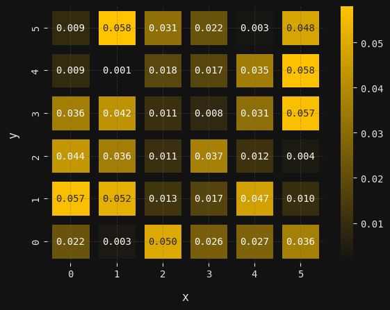
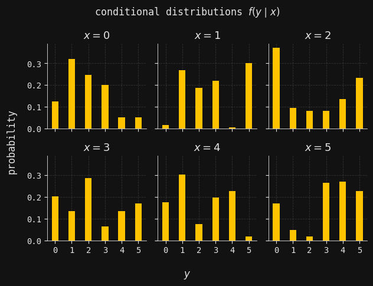
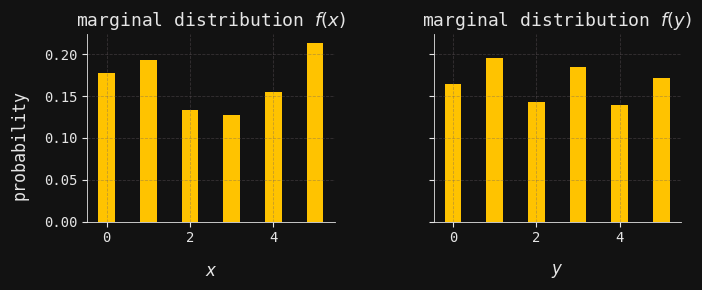
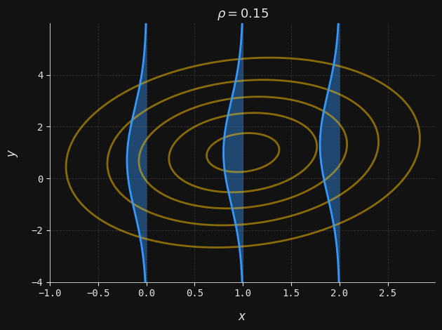
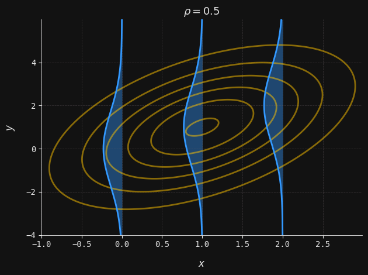
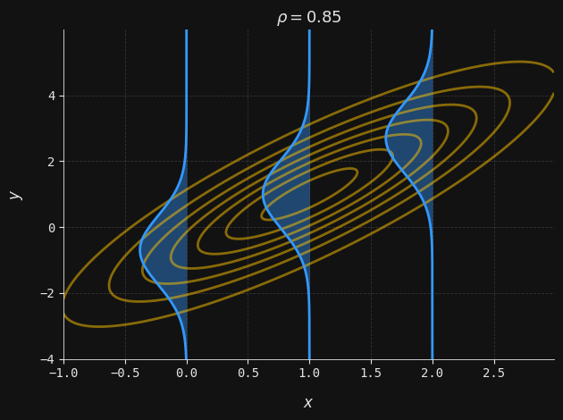

from scipy.stats import norm, multivariate_normal, entropy
import numpy as np
import seaborn as sns
import matplotlib.pyplot as plt
from matplotlib.colors import LinearSegmentedColormap
np.random.seed(42)
plt.style.use("../aux-files/custom-theme.mplstyle")
yellow = "#FFC300"
blue = "#3399FF"
pink = "#FF3399"
grey = "#121212"
white = "#E5E5E5"
colors = [yellow, blue, pink]
cmap_colors = [grey, yellow]
custom_cmap = LinearSegmentedColormap.from_list("my_cmap", cmap_colors)n = 6
joint = np.random.rand(n ** 2)
joint = joint / joint.sum()
joint = joint.reshape(n, n)
ax = sns.heatmap(joint.T, annot=True, fmt=".3f", cmap=custom_cmap, linewidth=8, linecolor=grey)
plt.xlabel("x")
plt.ylabel("y")
ax.invert_yaxis()
plt.show()
fig, axes = plt.subplots(nrows=2, ncols=3, sharey=True, sharex=True)
axes = axes.flatten()
conditionals = []
for x, ax in enumerate(axes):
conditional = joint[x, :] / joint[x, :].sum()
conditionals.append(conditional)
ax.bar(range(n), conditional, width=0.4, zorder=2)
ax.set_xticks(range(n))
ax.set_xticklabels(range(n))
ax.set_title(rf"$x={x}$")
fig.supxlabel(r"$y$")
fig.supylabel("probability")
fig.suptitle(r"conditional distributions $f(y\mid x)$")
plt.tight_layout()
plt.show()
X = joint.sum(axis=1)
Y = joint.sum(axis=0)
fig, axes = plt.subplots(ncols=2, sharey=True, sharex=True, figsize=(7, 3))
axes[0].bar(range(n), X, width=0.4)
axes[0].set_xlabel(r"$x$")
axes[0].set_title(r"marginal distribution $f(x)$")
axes[1].bar(range(n), Y, width=0.4)
axes[1].set_xlabel(r"$y$")
axes[1].set_title(r"marginal distribution $f(y)$")
fig.supylabel("probability")
plt.tight_layout()
plt.subplots_adjust(wspace=0.4)
plt.show()
info = entropy(Y) - sum([entropy(conditional) * X[x] for x, conditional in enumerate(conditionals)])
print(f"The mutual information between X and Y is {info:.4f}.")The mutual information between $X$ and $Y$ is 0.2032.def plot_multivar(ax, muX, muY, sigmaX, sigmaY, x, y, labels=False):
Sigma = np.array([[sigmaX ** 2, rho * sigmaX * sigmaY], [rho * sigmaX * sigmaY, sigmaY ** 2]])
Mu = np.array([muX, muY])
U = multivariate_normal(mean=Mu, cov=Sigma)
grid = np.dstack((x, y))
z = U.pdf(grid)
contour = ax.contour(x, y, z, colors=yellow, alpha=0.5)
if labels:
ax.clabel(contour, inline=True, fontsize=8)
def plot_conditional(ax, muX, muY, sigmaX, sigmaY, rho, y, x_obs):
mu = muY + (x_obs - muX) * rho * sigmaY / sigmaX
sigma = sigmaY * np.sqrt(1 - rho ** 2)
x = norm(loc=mu, scale=sigma).pdf(y)
ax.plot(-x + x_obs, y, color=blue)
ax.fill_betweenx(y, -x + x_obs, x_obs, color=blue, alpha=0.4)
def plot_combined(ax, muX, muY, sigmaX, sigmaY, rho, x, y, x_obs, labels=False):
plot_multivar(ax, muX, muY, sigmaX, sigmaY, x, y, labels)
y = np.linspace(np.min(y), np.max(y), num=250)
plot_conditional(ax, muX, muY, sigmaX, sigmaY, rho, y, x_obs[0])
plot_conditional(ax, muX, muY, sigmaX, sigmaY, rho, y, x_obs[1])
plot_conditional(ax, muX, muY, sigmaX, sigmaY, rho, y, x_obs[2])
ax.set_title(rf"$\rho ={rho}$")
ax.set_xlabel(r"$x$")
ax.set_ylabel(r"$y$")
plt.tight_layout()
plt.show()
_, ax = plt.subplots()
x, y = np.mgrid[-1:3:0.01, -4:6:0.01]
muX = 1
muY = 1
sigmaX = 1
sigmaY = 2
rho = 0.15
plot_combined(ax, muX, muY, sigmaX, sigmaY, rho, x, y, x_obs=[0, 1, 2], labels=False)
_, ax = plt.subplots()
rho = 0.50
plot_combined(ax, muX, muY, sigmaX, sigmaY, rho, x, y, x_obs=[0, 1, 2], labels=False)
_, ax = plt.subplots()
rho = 0.85
plot_combined(ax, muX, muY, sigmaX, sigmaY, rho, x, y, x_obs=[0, 1, 2], labels=False)